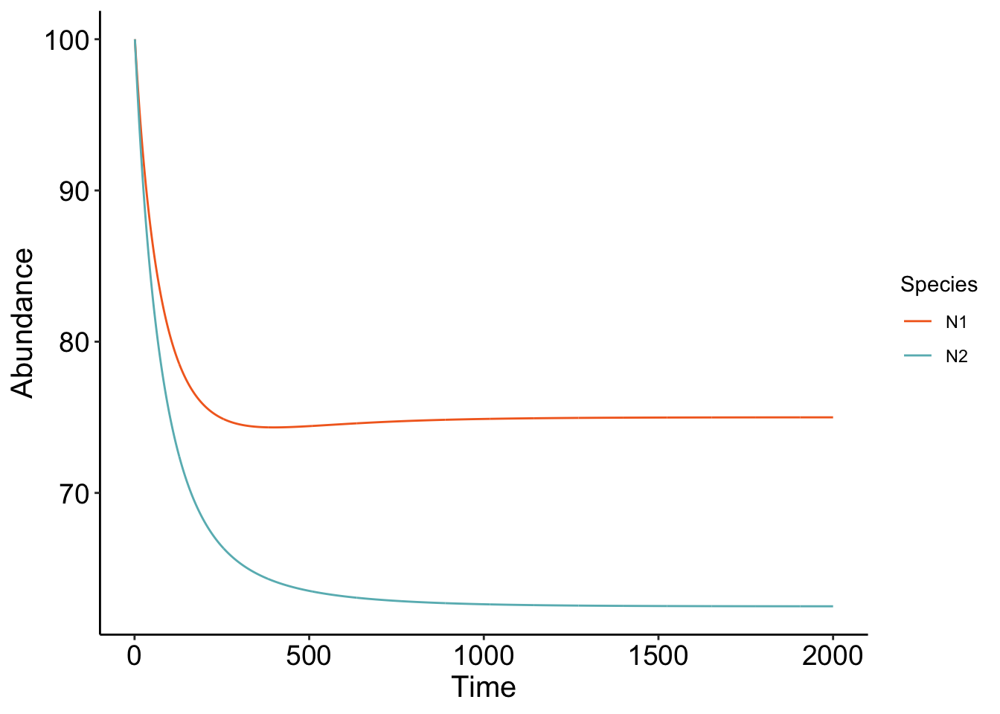
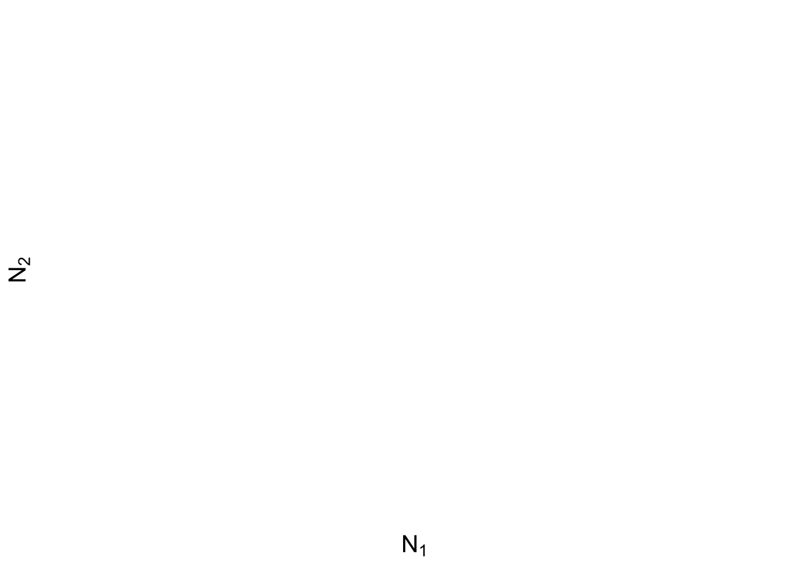
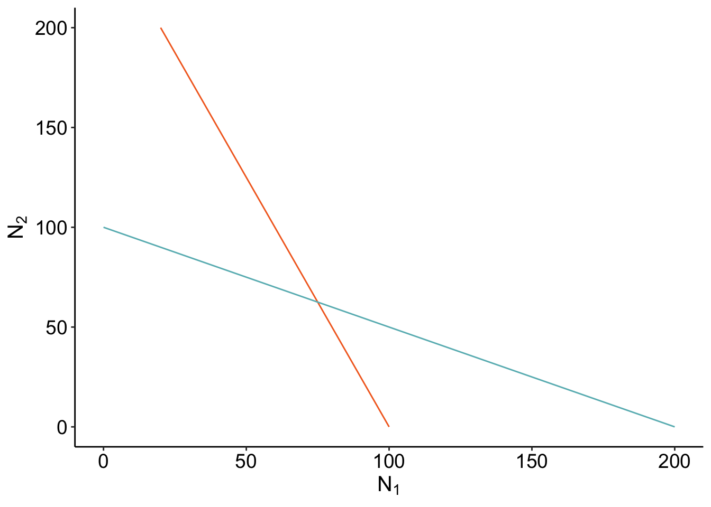
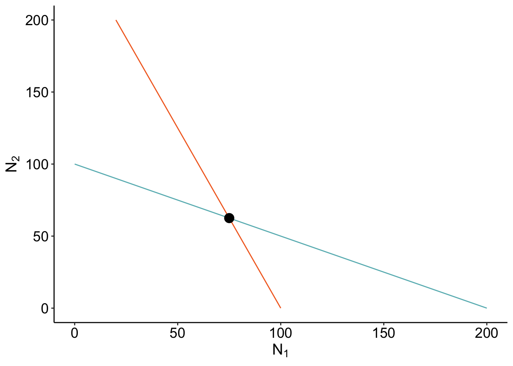
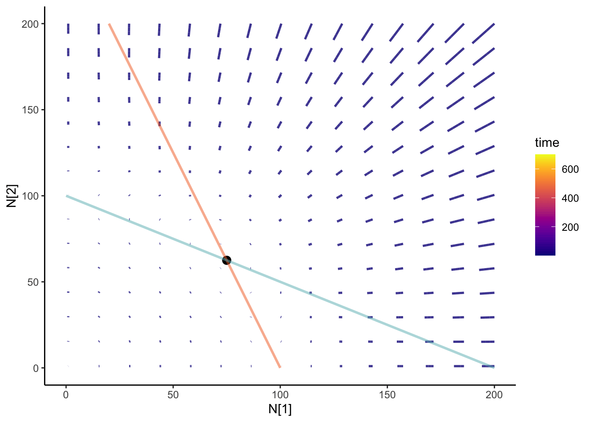

library(ggplot2)
library(gganimate)
library(reshape2)
library(viridis)Premise
I’m always astounded when revisiting the foundations of my field. The first time I saw the Lotka-Volterra competition model was in my Introduction to Ecology class. I come across it in passing when reading papers, and I see it more frequently now that I’m tackling more community ecology questions. Specifically, I am interested in the role of competition between vector species and how it influences disease risk. It’s always good to return to the basics to see how much you’ve grown as a researcher.
I think one way to demonstrate a deep understanding of the material is by making figures! While learning the mathematics is crucial, I find it helpful to code along with it. Also, if you’re interested in animating something like the Lotka-Volterra competition model, I’ve got you covered.
Reminder: The Lotka-Volterra Competition model
The Lotka-Volterra (LV) competition model is a seminal work that describes the dynamics of two competing species. By varying the strength of competition—both within a species and between species—we can observe competitive exclusion (where one species wins) or coexistence.
For the equations, assume we have two species \(N_1\) and \(N_2\):
\[ \begin{aligned} \frac{dN_1}{dt} &= rN_1\left(1 - (c_{11} N_1 + c_{21}N_2)\right) \\ \frac{dN_2}{dt} &= rN_2\left(1 - (c_{22} N_2 + c_{12}N_1)\right). \end{aligned} \]
Here, \(r\) represents the intrinsic growth rate, and the \(c\) values are the competition coefficients, which describe how much members of a species regulate their own growth rate \(c\) are the competition coefficients that describe how much members of it’s own species (\(c_{11} and c_{22}\)) as well as the impact of the other species (\(c_{12}\) and \(c_{21}\)). You can interpret the last two terms as the competitive effect of species 1 on species 2 and the competitive effect of species 2 on species 1. As an aside, you may have seen different formulations, especially with an explicit carrying capacity (\(K\)) but I just absorbed it in the competition coefficients.
A common formulation: \(rN_1(1-\frac{(N_1 - c_{21}N_2)}{K}))\)
So remember:
- \(c_{11}\) is the competition between members of species 1
- \(c_{22}\) is the competition between members of species 2
- \(c_{12}\) is the competition of species 1 on species 2
- \(c_{21}\) is the competition of species 2 on species 1
Let’s make a super simple function for simulating it- I’m just going to discretize the continuous model (honestly, should add a \(\delta_T\))
#c_df is a data.frame containing the competition coefficients above
#N1_0 is the initial population for N1
#N2_0 is the initial population for N2
#timestep is how long we want ot run it for
LV_func <- function(c_df, N1_0, N2_0, timestep){
#Generate a matrix to keep our records
pop_mat <- matrix(0, nrow = timestep, ncol = 3)
pop_mat[, 1] <- seq(1,timestep)
pop_mat[1,2] <- N1_0 #initial first population
pop_mat[1,3] <- N2_0 #initial second population
###Competition coefficient
c_11 <- as.numeric(c_df["c_11"])
c_12 <- as.numeric(c_df["c_12"])
c_22 <- as.numeric(c_df["c_22"])
c_21 <- as.numeric(c_df["c_21"])
r = 0.01 #Intrinsic growth rate is same for all species
for (t in seq(1,timestep - 1)){
N1= pop_mat[t,2] #Get the current population sizes
N2 = pop_mat[t,3]
N1_change <- r * N1 * (1-(c_11*N1 + c_21*N2))
N2_change <- r * N2 * (1-(c_22*N2 + c_12*N1))
pop_mat[t+1, 2] = N1 + N1_change
pop_mat[t+1, 3] = N2 + N2_change
}
return(pop_mat)
}Here are the competition coefficients I chose:
c_df <- data.frame(c_11 = 1e-2,
c_22 = 1e-2,
c_12 = 5e-3,
c_21 = 4e-3)
LV_df <- LV_func(c_df, 100, 100, 2000)
head(LV_df) [,1] [,2] [,3]
[1,] 1 100.00000 100.00000
[2,] 2 99.60000 99.50000
[3,] 3 99.20758 99.00947
[4,] 4 98.82254 98.52815
[5,] 5 98.44470 98.05581
[6,] 6 98.07389 97.59222plot_LV <- function(mat) {
LV_df <- data.frame(mat)
colnames(LV_df) <- c("time", "N1", "N2")
LV_melt <- melt(LV_df, id.vars = "time")
GG <- ggplot(
LV_melt,
aes(x = time, y = value, color = variable)) +
geom_line() +
scale_color_manual(values = c("#F36B23", "#68B8BE"), name = "Species") +
xlab("Time") +
ylab("Abundance") +
theme_classic() +
theme(
axis.text = element_text(size = 14, color = 'black'),
axis.title = element_text(size = 15,color = 'black')
)
return(GG)
}Let’s plot it out:
plot_LV(LV_df)
Cool! The parameters that we chose show that the two competing species are at equilibrium, with \(N_1\) being at a higher equilibrium than \(N_2\). Play around with the code! What parameters do you have to change to get competitive exclusion (one species winning it all?) A fun coding exercise is trying to figure out how to simulate a bunch of different competition coefficients and see what the ending equilibrium abundances are!
Finding the equilibrium
I always recommend finding the equilibrium once just to humble yourself. Remember to find the equilibrium, we want to set both \(\frac{dN_1}{dt}\) and \(\frac{dN_2}{dt}\) to 0. The first equilibrium is when \(N_1\) is 0 and when \(N_2\) is 0. Not surprising, if there are no species… nothing happens.
We can also set \(N_1\) to 0 which then gives \(N_2^* = \frac{r}{c_{22}}\) and when we set \(N_2\) to 0, this gives us \(N_1^* = \frac{r}{c_{11}}\). This means that in the absence of the other competitor, these species will reach their equilibrium that is dependent on the intrinsic growth divided by the intraspecific competition coefficient.
The last condition is then coexistence
\[ N_1^* = \frac{c_{22} - c_{21}}{c_{22} c_{11} - c_{12}c_{21}} \] and \[ N_2^* = \frac{c_{11} - c_{12}}{c_{22} c_{11} - c_{12}c_{21}} \] This is interesting, basically. For the equilibrium abundances of both species \(N_1^*\) and \(N_2^*\) to be positive, the intrinsic growth rate of
Note
Simple equations, but don’t let it fool you! It did take some time to calculate the equilibrium \(N_1*\) and \(N_2^*\). Good exercise in good organization- though I think it would have been easier if I made new variables. Ah, but you can brute-force it as I did.
Isoclines
I don’t have a good intuition of equations without seeing it visually! One way to visualize what is going is using isoclines: contours that describe where for \(N_1\) and \(N_2\) the population does not change (\(\frac{dN_1}{dt} = 0\) or \(\frac{dN_2}{dt} = 0\)) If the isoclines cross, that is where coexistence is possible!
Lotka, have beautiful isoclines
We can find the isoclines analytically! Basically, how the population of each species change is based on their own density as well as the other. So to analyze that visually, we should put both species on the axes: \(N_1\) on the x-axis and \(N_2\) on the y-axis. A visual representation of what I mean:
slate <- ggplot(data = NULL) +
xlab(expression(N[1])) +
ylab(expression(N[2])) +
theme_classic() +
theme(axis.text = element_text(size = 14, color="black"),
axis.title = element_text(size = 15, color = "black"));
slate
To find the isocline, set \(\frac{dN}{dt} = 0\) and we get:
\[ \frac{1 - c_{21} N_2}{c_{11}} = N_1 \] By generating different abundances for \(N_2\), we can see what the \(N_1\) has to be for its isocline to be 0!
isocline_N1 <- function(c_df) {
ab <- as.numeric(seq(0, 200))
c_11 <- as.numeric(c_df["c_11"])
c_21 <- as.numeric(c_df["c_21"])
isocline <- (1 - (c_21 * ab)) / c_11
full <- cbind.data.frame(N2 = ab, N1 = isocline)
return(full)
}
isoN1 <- isocline_N1(c_df)slate + geom_line(data =isoN1,aes(x= N1, y= N2), color = "#F36B23") 
Same idea for the \(N_2\):
\[ N_2 = \frac{1- c_{12}N_1}{c_{22} } \]
isocline_N2 <- function(c_df){
ab <- as.numeric(seq(0,200))
c_22 <- as.numeric(c_df["c_22"])
c_12 <- as.numeric(c_df["c_12"])
isocline <- (1 - (c_12 * ab))/c_22
full <- cbind.data.frame(N1 = ab,N2= isocline)
return(full)
}isoN2 <- isocline_N2(c_df)
isocline_GG <- slate +
geom_line(data =isoN1,aes(x= N1, y= N2), color = "#F36B23") +
geom_line(data = isoN2, aes(x = N1, y= N2), color ="#68B8BE") ;
isocline_GG
Where the isoclines cross is when \(\frac{dN_1}{dt}\) and \(\frac{dN_2}{dt}\) are 0 - that’s coexistence! Let’s check if our calculation of the coexistence equilibirum point is right? If it’s right, our point should be directly on where the isoclines cross.
calculate_coexistence <- function(c_df){
c_11 <- as.numeric(c_df["c_11"])
c_12 <- as.numeric(c_df["c_12"])
c_22 <- as.numeric(c_df["c_22"])
c_21 <- as.numeric(c_df["c_21"])
denom <- (c_22 * c_11 - c_12 * c_21)
N1_eq<- (c_22 - c_21)/denom
N2_eq<- (c_11 - c_12)/denom
return(cbind.data.frame(N1 = N1_eq, N2 = N2_eq))
}coexist_df<- calculate_coexistence (c_df)isocline_GG + geom_point(data = coexist_df, aes(x = N1, y= N2), size = 4)
Cool! But seems awfully empty.
Adding integral curves
We can add integral curves to figure out where the initial conditions would take you. It can also give us some clue if that coexistence is stable or unstable! How about we animate it? I always think that anything dynamical should be animated. It’s the study of motions! I’m going to be using the {gganimate} package
Here, I’m generating a dataframe where we have different combinations of the initial abundances of \(N_1\) and \(N_2\).
N12_0 <- expand.grid(N1= seq(1, 200, length = 15),
N2 = seq(1, 200, length = 15))Using our previous function LV_func, we can calculate the trajectory across time. I’m still not happy with this section of the code, and still figuring out how to make it cleaner (if you have any suggestions, pleaes email me!)
N12_full <- do.call(
rbind.data.frame,
apply(N12_0, 1, function(x) {
LV_func(
c_df,
x["N1"],
x["N2"], timestep = 700
)
},
simplify = FALSE
)
)
###Add an id
N12_full$id <- rep(seq(1, nrow(N12_0)), each = 700)
colnames(N12_full) <- c("time", "N1", "N2", "id")anim <- slate + geom_path(
data = N12_full,
aes(x = N1, y = N2, group = id, color = time), size = 0.9, alpha = 0.8
) +
geom_point(data = coexist_df, aes(x = N1, y = N2), size = 3) +
geom_line(data = isoN1, aes(x = N1, y = N2), color = "#F36B23", size = 1,alpha = 0.5) +
geom_line(
data = isoN2, aes(x = N1, y = N2), color = "#68B8BE",
size = 1, alpha = 0.5
) +
theme_classic() +
scale_color_viridis(option = "plasma") +
transition_reveal(time) +
ease_aes("cubic-in-out")
anim 
Outro
Animating the LV model was super fun! Good way of learning for beginners!